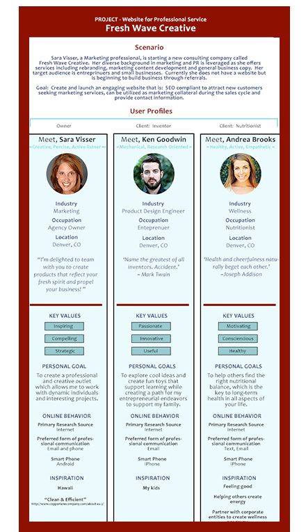
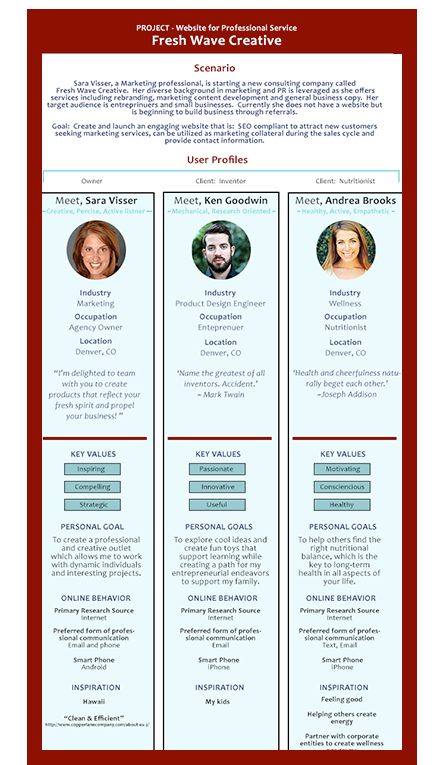

I'm Krista
I bring a passion for problem solving, product strategy and the creation of useful, elegant solutions for complex products.


Projects


WHY WORK WITH ME
Strategic, Dedicated and Collaborative
Creative professional with passion for building clear design that is engaging and immediately informative.

RESEARCH DRIVEN DESIGN
Listen, structure, ask, interpret use methods and tools: Create user journey maps, conduct user testing, competitive ysis, user flows, develop user personas, conduct interviews, define user cases which allows me to determine and document user’s goals.

UX/UI DESIGN
Above all, empathize with customer, educate/provide valuable information, engage, inspire...

WIREFRAME / ITERATE / REFINE
Communication tool to inform stakeholders of design/flow decisions.

PROTYPING / USABILITY TESTING
I use InVision to create protypes that test design ideas andty. The same user feedback logic is employed to conduct obersavations, view analytics to detrmine where roadblocks occur. Make suggestions for change...

PROJECT MANAGEMENT
Thorough, organized ... any to connect wiple stakeholders

BALANCED
Varied skill set with thy to te strategic issues balanced with user needs and
Work History & Selected Achievements
Consultant - Deisgn Consultant
School Deets
product audit and MVP design
Consultant - Project Management
Statera
scope level of effort to bid SalesForce integration
Consultant - e-commerce Business Development (Innovation Team)
Tonzof
competitive analysis to clarify value proposition and market position AND UX/UI for new vendor on-boarding
Consultant - Software Training & Product Documentation
Datacert
program summary and user guides for GRC product
Manager of Legal Finance & Technology (12 years)
Centurylink
automated e-billing and matter management
Download CV HERE
Education
UX/UI Design
Bloc
Bachelor of Science, Business Administration
University of Colorado at Denver
Denver Food Truck Finder

Denver Food Truck Finder is simple and intuitive mobile app designed
and branded throughout to easily search for, order from and map nearby food trucks.
Role
Bloc project to design iOS product with speical consideration to intuitiveness, flow, and usabilty.
Technology
Illustrator / Sketch / Balsamiq / InVision / Peek User Testing


Project Approach
Exploring similar sites for inspiration...Yelp, GrubHub for order flow and mapping. Defined User Stories which create functionality requirements. Created workflow and Site Map to begin to understand how defined functionality would link together. Name and logo from keeping it simple. Color palette fun, energetic and font straight forward. Low-fidelity wireframes in Balsamiq, mapping out text size, spacing, button size, integrate functionality (ex. adjusting quantity...place holders for ease of use necessities like location priming and consistancy in navigation.)


Project Focus
Sketch to create high fidelity wireframes...crisp, easy, intuitive. Design landing page/load app, ordering process (quantitiy, anticipate change of mind, account set-up within flow).
Project Results
...makes it special...
Fresh Wave

Fresh Wave Creative is a boutique content marketing firm looking for an on line presence.
Role
Create logo, branding, help define service offering and articulate value proposition, competitive analysis, create design, code...
Technology
Illustrator / Photoshop / Balsamiq / InVision / Peek User Testing / HTML / CSS / GitHub / SourceTree


Project Approach
Exploring similar sites for inspiration...regional boutique marketing and PR firms, design studios and xxx. Defined User Personas which began to shape the messaging. Name and logo to reflect owner’s personal interest. Color palette calm, playful, creative but simple. Low-fidelity wireframes in Balsamiq but quickly moved into hi-fidelity...
 



Project Focus
Code...first time with a blank screen in sublime text...
Project Results
...makes it special...

School Deets streamlines communications between schools and parents with multilingual capabilities, a dedicated mobile app and an easy to use Communication Center for adminsitration. All within a private, secure and Google integrated platform.
Role
...evaluate product and provide guidance on MVP...
Technology
Snagit / Sketch / draw.io / Camtasia / Trello / WordPress


Project Approach
When I joined the School Deets team they were well on their way to a soft launch. The product was about 90% through the development cycle yet desparate functionality was hindering completion. I was the fresh pair of eyes to help articulate priorities and define critical functionality for a clean Minimum Viable Product. Together we inventoried the product to determine what was working, not working, missing, redundant or not intuitive. Armed with a fresh current state analysis, we quickly identified a core data relationship that needed some refinment. We set critical path milestones and tweaked the project management tool to more efficiently sync with the development team using short sprints and prioritied requests.


Project Focus
Get to work...visually define problem and solution including current state screen shots and desired future state mock-ups. Liason with development and brainstorm solutions based on development capacity weighed with critical path priority. Worked with founding partner to develop product roadmap and define future change orders and additional functionality. Other work included writing scope of work for development of mobile app, preparation of training materials and the initial scoping for several fundamental changes to revamp User Roles, Data Relationships and Reporting functionality


Project Results
...resulted in succcessful MVP alpha launch summer of 2016 with more schools on-boarding fall of 2016! I also had the opportunity to create a marketing video which highlights one of School Deets’ core components of functionality, creating and translating school Posts. I had a great time consulting with this start-up! School Deets is primed to fill a market niche with a strong product supporting multi lingual communication within the school environment.

Artisan Style

Artisan Style
Role
...smooth selection and checkout process..
Technology
Illustrator / Balsamiq / InVision / Peek User Testing / Sketch
Project Approach
Artisan Style...

Project Focus
Selection process...Check out


Project Results
Artisan Style
Pockets

Pockets...articulate selling points turn visual, fun, engaging, personality
Role
...style, function, twist on apron usage..
Technology
Illustrator / Balsamiq / InVision / Peek User / Testing / Sketch
Project Approach
Pockets: Style Guide / Competitive Research / Understand User / Feature Benefits!!! / Logo / WireFrame / Iterate! / InVision (add screen shot) / Iterate! / Clean-Crisp


Project Focus
the personal story

Project Results
anticipated launch...
Winter Public Relations
Winter Public Relations...
Role
...visually appealing..
Technology
Illustrator / Wix
Project Approach
WinterPR...
 <
<

Want to connect?
krista.rippons@gmail.com
303-956-4974